Historical: IMDb 1990s
http://www.imdb.com/chart/1990s
Showing Movies that were previously on this list. (Historical tracking started near the start of 2010.)- Normal View
List contains: 466 items, 853.9 hours. (19 are missing runtime)
Showing Movies that were previously on this list. (Historical tracking started near the start of 2010.)- Normal View
List contains: 466 items, 853.9 hours. (19 are missing runtime)
Stephen Klancher
...has seen 276
...has seen 536.4 hours
...has not seen 317.5 hours

Timeline - Covers
Most Recent:
The Imitation Game
First Unseen:
The Muppet Movie (# 4)
...has seen 276
...has seen 536.4 hours
...has not seen 317.5 hours
Timeline - Covers
Most Recent:
The Imitation Game
First Unseen:
The Muppet Movie (# 4)
Seen 114 times, Last seen February 15, 2023

Star Wars: Episode IV - A New Hope (1977)
Seen 88 times, Last seen February 14, 2023

The Lord of the Rings: The Fellowship of the Ring (2001) Releases on 2001-12-19
Stephen Klancher: SEEN 
I read half-way through the books, quit for a while, then finished right before this came out. I actually like the movies better. I enjoy all three movies, but one notable thing about this one was much fun it was that everyone around me was really into it at the time. The fact that the girls I was friends with and girlfriend at the time were drooling over the actors just added another reason for everyone to be enthusiastic and want to keep rewatching it. So yeah, fun times. :-)
Seen 2580 times, Last seen February 12, 2023

Fight Club (1999)
Stephen Klancher: SEEN
There's so much that is cool about this movie. But mostly the impact of the reveal the first time you watch it. The sort of Sixth-Sense change where you can then rewatch it as an entirely different experience.
Seen 90 times, Last seen February 11, 2023

The Muppet Movie (1979) Releases on 1979-06-22
Seen 96 times, Last seen February 10, 2023

The Princess Bride (1987)
Stephen Klancher: SEEN
We rented this movie at my dad's house when I was very young. So young in fact that I had no idea what the movie was called. I just had a vague memory of a really cool movie about a man in black with the storytelling grandfather as a frame for the adventure. In high school somehow this movie came up and I was excited to learn not only the title of the movie lost in my memories, but also that many other people liked it too. "As you wish" and "My name is Inigo Montoya" always make me smile.

Seen 2567 times, Last seen February 7, 2023
The Matrix (1999)
Stephen Klancher: SEEN
My parents (divorced) got in an argument over this movie. My dad wanted to take me to see it, but my mom, more strict at the time, didn't want it to happen. At some point she finally gave in, but then we had to go see it in the cheaper, crappier theater. It was still amazing, of course. And as Bob can attest, at any given time my dad's house on Mountain Oak probably had the DVD of this or Fifth Element playing. It's too bad they never made any sequels to this. <i>None. Never.</i>
Seen 2590 times, Last seen February 6, 2023

The Shawshank Redemption (1994)
Stephen Klancher: SEEN
I'm not sure it forever deserves the top spot on IMDB, but definitely a good movie. I remember watching it on TV some night in Jr High when I was supposed to be working some project... let's see, do a diorama of a scene from 1984 or watch Shawshank? Hmm...
Seen 2583 times, Last seen January 31, 2023

Se7en (1995)
Stephen Klancher: SEEN
This movie did not strike me as much as most people I guess. Am I too desensitized? I just seem to remember Brad Pitt swearing a lot.
Seen 121 times, Last seen January 29, 2023

Back to the Future (1985)
Stephen Klancher: SEEN
I love the Back to the Future trilogy. Yes even the third one. I've always especially loved the music. Watching Predator at some point I was wondering why it was reminding me of Back to the Future... and it turns out the same guy did the music...
Seen 797 times, Last seen January 25, 2023

Groundhog Day (1993) Releases on 1969-12-31
Stephen Klancher: SEEN
The joke is obvious but it's also the truth: I watched this movie over and over and over. This was one of a handful of movies we rewatched frequently growing up at my dad's house. I love Bill Murray and I love this movie.

Seen 2587 times, Last seen January 20, 2023

The Big Lebowski (1998) Releases on 1998-02-15
Stephen Klancher: SEEN
Brett introduced me to Lebowski and I have since watched it many times. Love it.
Seen 108 times, Last seen January 19, 2023

Cool Hand Luke (1967)
Stephen Klancher: June 21, 2009
Aptly named... he's a cool character. The Lucy and 50 eggs scenes were fun. I liked the simple question he asked of god near the end: "You made me like I am; just where do I fit?"

Seen 104 times, Last seen January 14, 2023

Eternal Sunshine of the Spotless Mind (2004) Releases on 1969-12-31
Stephen Klancher: SEEN
I love this movie. Would I zap my brain? Probably. Maybe I already did. How would I know? Whatever. I love this movie.
Seen 2594 times, Last seen January 6, 2023

Pulp Fiction (1994) Releases on 1994-10-14
Stephen Klancher: SEEN
Very fun. Reading Quentin Tarantino and Philosophy (http://www.amazon.com/Quentin-Tarantino-Philosophy-Popular-Culture/dp/0812696344) made it even more so.

Seen 14 times, Last seen December 20, 2017

Aliens (1986)
Stephen Klancher: January 17, 2008
Game over man! A totally different kind of cool than the first one. Plus like half of the sounds from StarCraft are from this movie.
Seen 64 times, Last seen December 20, 2017
Flatliners (1990) Releases on 1990-08-10
Seen 2493 times, Last seen December 20, 2017

Goodfellas (1990)
Stephen Klancher: SEEN
I remember choosing to <i>not</i> watch this with Brett, then watching it maybe a year later and thinking I was stupid for missing out on it. Cool movie!
Seen 615 times, Last seen December 20, 2017

Hook (1991) Releases on 1969-12-31
Stephen Klancher: SEEN
I watched this a bunch growing up and really enjoyed it. Good dose of imagination in the settings...
Seen 495 times, Last seen December 20, 2017
Point Break (1991) Releases on 1991-07-12
Seen 2494 times, Last seen December 20, 2017

The Silence of the Lambs (1991) Releases on 1991-02-14
Seen 2148 times, Last seen December 20, 2017
Terminator 2: Judgment Day (1991)
Seen 221 times, Last seen December 20, 2017
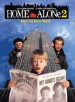
Home Alone 2: Lost in New York (1992)
Seen 51 times, Last seen December 20, 2017
The Last of the Mohicans (1992) Releases on 1969-12-31
Seen 73 times, Last seen December 20, 2017
The Muppet Christmas Carol (1992) Releases on 1992-12-11
Seen 2478 times, Last seen December 20, 2017

Reservoir Dogs (1992) Releases on 1969-12-31
Stephen Klancher: March 25, 2003
I remember Sean Florin recommending this movie to me long long ago. It was one of the earliest movies I downloaded and I invited a few friends over to watch it with me. It was an amazing movie to go into knowing nothing and having no expectations.


Seen 621 times, Last seen December 20, 2017

The Nightmare Before Christmas (1993)
Stephen Klancher: November 4, 2007
I first saw this with Justine in 3D on the IMAX screen. Fun music!
Seen 2493 times, Last seen December 20, 2017

Schindler's List (1993)
Stephen Klancher: SEEN
I watched this in my 9th grade history class. Liam Neeson back when his only power was being German. No force, no lightsaber. But seriously, this is a serious movie. I don't remember much of the specifics at this point, but watching Life is Beautiful more recently made me think of watching this.
Seen 2493 times, Last seen December 20, 2017

The Lion King (1994)
Stephen Klancher: SEEN
Back in the good old days of Disney movies... Scar was a great villain and the song Be Prepared is incredible.


Seen 201 times, Last seen December 20, 2017
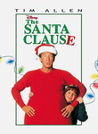
The Santa Clause (1994)
Seen 2491 times, Last seen December 20, 2017
Braveheart (1995)
Stephen Klancher: SEEN
Hmm, I'm not 100% I've seen the beginning of this movie. See this was the second rated R movie I ever saw, with the first being the movie Speed. My mom was on her honeymoon and I was with cousins and other family at a hotel whereever we were on the coast. So we got away with renting rated R movies. I watched Speed in one room and went to the next room and joined them in watching Braveheart. I mostly just remember the iconic, "You can take our lives, but you can never take our freedom!" Also I saw a statue of William Wallace in front of a castle years later. I should rewatch it someday just because now I know and love Patrick McGoohan.
Seen 2091 times, Last seen December 20, 2017

Heat (1995)
Seen 464 times, Last seen December 20, 2017
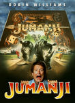
Jumanji (1995) Releases on 1995-12-15
Seen 1368 times, Last seen December 20, 2017

Toy Story (1995)
Stephen Klancher: SEEN
Pixar is always pretty solid and Tim Allen plus Tom Hanks make for some fun recognizable voice acting.
Seen 2493 times, Last seen December 20, 2017

The Usual Suspects (1995) Releases on 1969-12-31
Stephen Klancher: SEEN
I remember thinking this was a really cool movie back when I watched it at Nick's house in high school. To be honest I can't remember much about it now, just the feeling that it was really cool... and seeing Spacey suddenly stop limping...
Seen 2131 times, Last seen December 20, 2017

Fargo (1996) Releases on 1996-04-05
Seen 534 times, Last seen December 20, 2017
From Dusk Till Dawn (1996) Releases on 1996-01-19

Seen 2474 times, Last seen December 20, 2017

Good Will Hunting (1997) Releases on 1969-12-31
Seen 137 times, Last seen December 20, 2017
Home Alone 3 (1997) Releases on 1997-12-12
Seen 1905 times, Last seen December 20, 2017

Titanic (1997)
Stephen Klancher: SEEN
Not a bad movie, but since I was in junior high when this came out, I can only associate it with fawning girls. Though I don't think that was really limited to junior high.
Seen 2474 times, Last seen December 20, 2017
American History X (1998)
Stephen Klancher: SEEN
This movie was incredibly violent. I saw it when I was 14 and while I'd like to be able to say that a 14 year old should be able to see anything, I also like to remind my mom that by letting me see the curb scene at that age I was forever traumatized.

Seen 2492 times, Last seen December 20, 2017

The Green Mile (1999)

Seen 1838 times, Last seen December 20, 2017

Star Wars: Episode I - The Phantom Menace (1999)
Stephen Klancher: SEEN
Remembering this movie hurts me. I've seen it twice... well, 2.2 times. Once was in the theater, during which I was busy telling myself it wasn't that bad. The other time was the RiffTrax version (http://www.rifftrax.com/rifftrax/star-wars-episode-i-phantom-menace) which was funny but crushed my hopeful claim that it wasn't a bad movie. The .2 time I saw this was when I watched a fan edit of the prequel trilogy which had only 20 minutes of Episode I and no Jar Jar scenes.

Seen 73 times, Last seen December 20, 2017
Jack Frost (1998) Releases on 1998-12-11
Seen 2493 times, Last seen December 20, 2017

American Beauty (1999)
Stephen Klancher: December 31, 2002
Fantastic movie. Many good quotables. I tend to rather watch something new instead of rewatching anything, but if I see this on I'm completely unable to pull myself away.
Seen 14 times, Last seen December 18, 2017

Vertigo (1958) Releases on 1969-12-31
Seen 13 times, Last seen December 17, 2017

Dr. Strangelove or: How I Learned to Stop Worrying and Love the Bomb (1964)
Stephen Klancher: SEEN
Peter Sellers is amazing. Just remember, "you can't fight in here! This is the War Room!"
Seen 17 times, Last seen December 16, 2017

Raiders of the Lost Ark (1981)
Stephen Klancher: SEEN
I love Indiana Jones and Harrison Ford. I watched a lot of Star Wars and Indiana Jones while growing up. Just thinking about it makes me want to watch again...
Seen 162 times, Last seen December 16, 2017
The Godfather: Part III (1990) Releases on 1990-12-25

Seen 34 times, Last seen December 16, 2017

Legends of the Fall (1994) Releases on 1995-01-13
Seen 5 times, Last seen December 16, 2017
Ace Ventura: When Nature Calls (1995)
Seen 315 times, Last seen December 16, 2017
The Lost World: Jurassic Park (1997)
Seen 1708 times, Last seen December 16, 2017

10 Things I Hate About You (1999)
Seen 15 times, Last seen December 15, 2017

Casablanca (1942)
Stephen Klancher: August 4, 2003
I borrowed and watched this summer of 2002. Even then I had a vague idea that I wanted to see some of the most well known movies, with the IMDB top 250 as my idea for a good start.
I really enjoyed it! And so many elements or lines in it that could be called cliche now were actually their origin. This is the movie that solidified my interest in watching well rated "old movies." Compare to Citizen Kane.
I really enjoyed it! And so many elements or lines in it that could be called cliche now were actually their origin. This is the movie that solidified my interest in watching well rated "old movies." Compare to Citizen Kane.
Seen 19 times, Last seen December 14, 2017

City of God (2002) Releases on 2004-02-13
Stephen Klancher: SEEN
I got a hold of this movie because of Erin near the beginning of college, although I can't remember for certain if I watched it with her or not. The main impression I remember about this movie is that it was vivid both in color and content.
Seen 17 times, Last seen December 12, 2017

Inception (2010) Releases on 2010-07-16
Stephen Klancher: July 17, 2010
Dreams within dreams... there was never a chance I wouldn't like this movie. It was incredibly fun.
Seen 14 times, Last seen December 11, 2017

Star Wars: Episode V - The Empire Strikes Back (1980)
Stephen Klancher: SEEN
This was the one I watched least when I was younger. The slightly less familiarity has made it more attractive for rewatching in later years. Also it's Star Wars. <3
Seen 291 times, Last seen December 10, 2017
GoldenEye (1995) Airs on 1995-11-13
Stephen Klancher: SEEN
I don't really remember if I had watched this first or if the N64 game was what turned me on to the movie, but I watched this a lot and I still love it now. Seriously what could be better than seeing Bond fight another 00 agent?

Seen 201 times, Last seen December 9, 2017
Total Recall (1990)
Stephen Klancher: April 5, 2010
This is an awesome movie. I had seen most of it before but bit by bit on tv. Finally watched it all together and liked it even more. See you at the party Richter!
Seen 402 times, Last seen December 9, 2017

Aladdin (1992)

Seen 2325 times, Last seen December 9, 2017

Trainspotting (1996)
Stephen Klancher: SEEN
The "Choose life" intro sticks in my head. Crazy movie. I think I watched it because my high school English teacher Mr. Ruff had a poster of it. Come to think of it, I wanted to watch all the movies of which he had posters on the walls. That was the first movie list I aspired to complete, but I transposed it with the IMDb list because ease of access and significant overlap. Hmm.
Seen 1019 times, Last seen December 9, 2017

The Truman Show (1998)
Stephen Klancher: SEEN
I loved this movie. The only problem was it gave me a more specific scenario for my general paranoia to latch on to. Clearly my life is full of people behind the scenes watching and manipulating my life. If I tune my radio just right I might be able to hear their radio chatter...
Seen 274 times, Last seen December 9, 2017

Mulan (1998)

Seen 16 times, Last seen December 9, 2017

The Lord of the Rings: The Return of the King (2003) Releases on 2003-12-17
Stephen Klancher: December 17, 2003
Probably my favorite of the trilogy, but they are all fantastic.
Seen 14 times, Last seen December 7, 2017

The Dark Knight (2008)
Stephen Klancher: July 19, 2008
Saw on the IMAX twice on the first Saturday after release. OMG so good! Got a picture of me with the Joker at the theater too.

Seen 1892 times, Last seen December 2, 2017
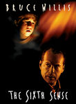
The Sixth Sense (1999)
Stephen Klancher: SEEN
Probably spoiled for anyone who didn't see it soon after it came out, but a well done twist made this fun. Plus there's the iconic "I see dead people" line.

Seen 1214 times, Last seen November 25, 2017

Romeo + Juliet (1996) Releases on 1996-11-01
Stephen Klancher: July 24, 2011
Some parts were hard to follow or too over the top, but for the most part it was pretty fun to see the same lines portrayed in a radically different way.
Seen 1332 times, Last seen November 25, 2017
Life Is Beautiful (1997) Releases on 1998-10-23
Seen 289 times, Last seen November 18, 2017
The Addams Family (1991) Releases on 1991-11-22


Seen 118 times, Last seen November 18, 2017
Girl, Interrupted (1999) Releases on 2000-01-14
Seen 47 times, Last seen November 12, 2017
Halloween: The Curse of Michael Myers (1995) Releases on 1995-09-29
Seen 129 times, Last seen November 11, 2017
Addams Family Values (1993) Releases on 1993-11-19
Seen 45 times, Last seen November 11, 2017
Halloween H20: 20 Years Later (1998) Releases on 1998-08-05
Seen 38 times, Last seen November 11, 2017
Practical Magic (1998) Releases on 1998-10-16
Seen 110 times, Last seen November 3, 2017
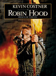
Robin Hood: Prince of Thieves (1991)
Seen 68 times, Last seen November 3, 2017
Robin Hood: Men in Tights (1993) Releases on 1993-07-28
Seen 7 times, Last seen November 3, 2017

Cube (1997)
Stephen Klancher: September 27, 2010
I enjoy when movies tell a whole story within a constrained setting and timeframe. Amusing when Worth goes into his explaination of his small part of the creation of the Cube and why they had to put people in it: "You have to use it, or you admit that it's pointless."
Seen 9 times, Last seen October 28, 2017
The Man in the Moon (1991) Releases on 1991-08-30
Seen 25 times, Last seen October 26, 2017
Can't Hardly Wait (1998) Releases on 1998-06-12
Seen 53 times, Last seen October 26, 2017
The Faculty (1998) Releases on 1998-11-12
Seen 164 times, Last seen October 14, 2017
The Handmaid's Tale (1990) Releases on 1990-03-09


Seen 126 times, Last seen October 7, 2017
Boyz n the Hood (1991) Releases on 1991-07-02
Seen 41 times, Last seen September 30, 2017
Fried Green Tomatoes (1991) Releases on 1991-12-27

Seen 41 times, Last seen September 30, 2017
True Lies (1994) Releases on 1994-07-15
Seen 20 times, Last seen September 30, 2017
The Island of Dr. Moreau (1996) Releases on 1969-12-31

Seen 54 times, Last seen September 30, 2017
Deep Blue Sea (1999) Releases on 1999-07-28
Seen 76 times, Last seen September 18, 2017
Twin Peaks: Fire Walk with Me (1992) Releases on 1992-08-28
Seen 13 times, Last seen September 18, 2017
The Full Monty (1997) Releases on 1997-09-19
Seen 867 times, Last seen August 19, 2017

Unforgiven (1992)
Stephen Klancher: SEEN
We watched this movie in Mr. Ruff's English class as part of a style comparison of this and another western of a much different tone, Shane. For me, the style of Unforgiven comes down to the line "Deserve's got nothin' to do with it." This was the first Western I have a distinct memory of watching. Prior to this I just had a vague assumption that I didn't care for Westerns, but this and a few others put me on the road to realizing how awesome they can be.
Seen 184 times, Last seen August 19, 2017
Ghost in the Shell (1995) Releases on 1996-03-29
Seen 457 times, Last seen August 19, 2017
The Parent Trap (1998) Releases on 1998-07-20
Seen 13 times, Last seen August 19, 2017

Wild Wild West (1999) Releases on 1999-06-30
Seen 5 times, Last seen August 12, 2017
The Age of Innocence (1993) Releases on 1993-10-01
Seen 777 times, Last seen August 12, 2017
Casino (1995) Releases on 1995-11-22
Stephen Klancher: September 26, 2009
Nobody flips out and kills a guy like Pesci flips out and kills a guy. De Niro is always fun to watch. At different times this was making me think of Scarface, Goodfellas, Once Upon A Time in America, and Raging Bull. Especially when there is a clear answer here to the question in Raging Bull about De Niro's wife... Scorsese, De Niro, and Pesci together is a pretty cool combination.
Seen 243 times, Last seen August 5, 2017
The Little Rascals (1994) Releases on 1994-08-05
Seen 592 times, Last seen July 29, 2017
Ed Wood (1994)

Seen 255 times, Last seen July 15, 2017
A League of Their Own (1992) Releases on 1992-07-01

Seen 32 times, Last seen July 15, 2017
Vegas Vacation (1997) Releases on 1997-02-14
Seen 13 times, Last seen July 8, 2017
The Hunt for Red October (1990) Releases on 1990-03-02

Seen 61 times, Last seen June 24, 2017
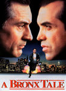
A Bronx Tale (1993) Releases on 1993-09-29

Seen 93 times, Last seen June 17, 2017
Alien (1992)
Stephen Klancher: January 22, 2009
Not as cool as the first two but still fun. I love that image of the alien right up against Ripley's face.
I should say though, seeing parts of this years ago on tv is what made me never interested in watching the Aliens series in the first place. Many parts of the movie were so dark that it was hard to tell what was happening. And not in a way that created suspense or added to the atmosphere, just in a way that made watching it frustrating. Watching on a big, bright projector in a dark room helped that some.
Also... why kill Hicks?? He would have fit into this movie fine.
I should say though, seeing parts of this years ago on tv is what made me never interested in watching the Aliens series in the first place. Many parts of the movie were so dark that it was hard to tell what was happening. And not in a way that created suspense or added to the atmosphere, just in a way that made watching it frustrating. Watching on a big, bright projector in a dark room helped that some.
Also... why kill Hicks?? He would have fit into this movie fine.
Seen 129 times, Last seen June 17, 2017
Alien: Resurrection (1997)
Stephen Klancher: February 1, 2009
I must have seen a fair portion of this on TV at some point... I think this is better than Aliens 3. Ripley is too bad ass to let a little death stop her. I wish Michael Wincott was in more of the movie... he's cool.
Seen 265 times, Last seen June 17, 2017
Big Daddy (1999) Releases on 1999-06-25
Seen 847 times, Last seen June 10, 2017

Twelve Monkeys (1995)
Stephen Klancher: April 25, 2009
That was excellent. Brad Pitt is amazing as a crazy man and I always love Bruce Willis. Everything about the future scenes was so Terry Gilliam, although I was surprised to see no midgets. Time travel and insane prognostications blurring the lines between hallucinations and reality? Yes please.
Also, the creepy distorted "Merry Christmas!" at the end of her message was sampled in a very spooky sounding remix of Mario 64 haunted house music. I never knew what it was from until now, but I have always thought it was one of the most creepy distortions possible.
Also, the creepy distorted "Merry Christmas!" at the end of her message was sampled in a very spooky sounding remix of Mario 64 haunted house music. I never knew what it was from until now, but I have always thought it was one of the most creepy distortions possible.

Seen 105 times, Last seen May 27, 2017
Mrs. Doubtfire (1993) Releases on 1993-11-24
Seen 953 times, Last seen May 27, 2017
Lock, Stock and Two Smoking Barrels (1998)
Stephen Klancher: SEEN
I always associated this and Snatch. But I saw Snatch first, and I always liked it more. Both fun though.
Seen 34 times, Last seen May 20, 2017
Homeward Bound: The Incredible Journey (1993) Releases on 1993-02-03

Seen 13 times, Last seen May 6, 2017
Blank Check (1994) Releases on 1969-12-31
Seen 51 times, Last seen April 29, 2017
Cool Runnings (1993) Releases on 1993-10-01
Seen 40 times, Last seen April 23, 2017
Mighty Morphin Power Rangers: The Movie (1995) Releases on 1995-06-30

Seen 19 times, Last seen April 10, 2017
My Cousin Vinny (1992) Releases on 1992-03-13
Seen 120 times, Last seen April 8, 2017
Cruel Intentions (1999) Releases on 1999-03-05
Seen 152 times, Last seen April 2, 2017

Interview with the Vampire: The Vampire Chronicles (1994)
Seen 846 times, Last seen March 26, 2017

L.A. Confidential (1997)


Seen 6 times, Last seen March 11, 2017
Mighty Joe Young (1998) Releases on 1998-12-25
Seen 6 times, Last seen March 11, 2017
One False Move (1992) Releases on 1992-05-08
Seen 90 times, Last seen March 11, 2017

Apollo 13 (1995) Releases on 1995-06-30

Seen 6 times, Last seen March 5, 2017
The Thin Red Line (1998) Releases on 1999-01-15
Seen 6 times, Last seen February 19, 2017
A Walk in the Clouds (1995) Releases on 1995-08-11
Seen 6 times, Last seen January 29, 2017
White Men Can't Jump (1992) Releases on 1992-03-27
Seen 6 times, Last seen January 29, 2017
Courage Under Fire (1996) Releases on 1996-07-12


Seen 20 times, Last seen January 22, 2017
Postcards from the Edge (1990) Releases on 1990-09-12
Seen 6 times, Last seen January 22, 2017
Menace II Society (1993) Releases on 1993-05-26
Seen 106 times, Last seen January 22, 2017
Galaxy Quest (1999) Releases on 1999-12-23
Seen 55 times, Last seen January 7, 2017

Dances with Wolves (1990) Releases on 1990-11-21
Seen 34 times, Last seen January 7, 2017

Die Hard 2 (1990)

Seen 34 times, Last seen December 18, 2016
Heavy Weights (1995) Releases on 1995-02-17
Seen 6 times, Last seen December 11, 2016

The English Patient (1996) Releases on 1996-11-06


Seen 6 times, Last seen November 27, 2016
The Arrival (1996) Releases on 1996-05-31
Seen 13 times, Last seen November 27, 2016
Mars Attacks! (1996) Releases on 1996-12-12
Seen 27 times, Last seen November 27, 2016
Space Jam (1996) Releases on 1996-11-15
Seen 42 times, Last seen November 27, 2016
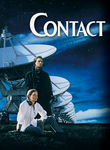
Contact (1997) Releases on 1997-07-11

Seen 52 times, Last seen November 13, 2016

The Crow (1994)
Stephen Klancher: January 11, 2009
That was a cool movie. Probably would have been even cooler to see longer ago. Seems like the type that would have stuck with me.


Seen 49 times, Last seen October 31, 2016
The Talented Mr. Ripley (1999) Releases on 1999-12-25


Seen 13 times, Last seen September 25, 2016
Milk Money (1994) Releases on 1994-08-31
Seen 6 times, Last seen September 11, 2016
Another You (1991) Releases on 1991-07-26
Seen 71 times, Last seen September 11, 2016
Austin Powers: International Man of Mystery (1997)
Seen 6 times, Last seen September 4, 2016
Drop Dead Gorgeous (1999) Releases on 1999-07-23


Seen 12 times, Last seen August 7, 2016
Pokmon: The First Movie - Mewtwo Strikes Back (1998) Releases on 1999-11-10
Seen 11 times, Last seen July 22, 2016

Wild Strawberries (1957)
Seen 13 times, Last seen July 21, 2016

Blade Runner (1982)
Stephen Klancher: SEEN
I watched this and only thought it was ok. I found out later that the Director's Cut which I watched was lacking the narration of the original. I often really enjoy narration in movies and might have enjoyed this more if I had a clearer understanding of what was going on in some parts. Maybe someday I'll have to rewatch the original version.
Seen 14 times, Last seen July 20, 2016

Up (2009)
Stephen Klancher: June 14, 2009
That was a fantastic movie. Visually very pretty. The kid and the dog are a great counterpoint to the old man. Not many movies manage to be so happy and kid -friendly and actually be so amazing. I walked out of the theater happy!
Seen 10 times, Last seen July 19, 2016

2001: A Space Odyssey (1968)
Stephen Klancher: SEEN
I think I watched parts of this in my Physics class in high school, then came home and watched the rest. I think there was no justification other than that Mr Loritz just wanted to watch the movie.

Seen 14 times, Last seen July 18, 2016

Lawrence of Arabia (1962)
Stephen Klancher: July 2, 2008
I remember my mom telling me for a long time that this was her favorite movie, so I was excited to watch it. Very cool epic.

Seen 14 times, Last seen July 13, 2016

Citizen Kane (1941)
Stephen Klancher: February 12, 2008
Overrated. Compare to Casablanca because they are both "old movies" (1 year apart) and both always ranked high on movie lists.
Seen 14 times, Last seen July 12, 2016

Django Unchained (2012) Releases on 2012-12-25
Seen 13 times, Last seen July 11, 2016

Spirited Away (2001) Releases on 2001-07-20
Stephen Klancher: April 6, 2003
I watched with in a theater in Bakersfield with my mom. I don't know if it was a rerelease or late after the release or if this is all they did in Bakersfield, but I seem to remember that it was only playing on this one screen in town and it was an abnormally small one.
I really enjoyed the animation and the fantasy of the whole setting.
I really enjoyed the animation and the fantasy of the whole setting.
Seen 13 times, Last seen July 10, 2016

City Lights (1931)
Stephen Klancher: October 20, 2008
A few lol moments. I'm not very into silent films. I think the main role they should play in modern times is a lesson for filmmakers: You can communicate without saying something directly in dialog.
Seen 287 times, Last seen June 28, 2016
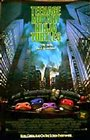
Teenage Mutant Ninja Turtles (1990)
Seen 26 times, Last seen June 28, 2016
I Know What You Did Last Summer (1997) Releases on 1997-10-17
Seen 16 times, Last seen June 27, 2016

12 Angry Men (1957)
Stephen Klancher: October 19, 2007
I actually saw the 1997 version first (Tony Danza!), but I love them both. Such a great thing to have a story focused down to pretty much one room and just watching the characters interact. I liked this (both versions actually) a lot.
Seen 11 times, Last seen June 25, 2016

The Godfather: Part II (1974)
Stephen Klancher: January 2, 2004
I can't say I remember a lot about this movie other than the fact that I watched with Bob not long after college started. And that he heard the third movie was bad so he refused to watch it... so this is where we stopped.
Seen 13 times, Last seen June 24, 2016

The Godfather (1972) Releases on 1972-03-24
Stephen Klancher: SEEN
I don't remember much about this movie directly. The main thing I remember is a comment from a friend while we all watched it together the summer before college. My girlfriend at the time was either disinterested or bothered by the violence, whereas I thought it was a cool movie. By my friend's observation, this was the first time in a long time that I insisted on an opinion contrary to hers. I don't remember being that bad, but the observation was memorable, and this movie reminds me of it.
Seen 43 times, Last seen June 23, 2016

Teenage Mutant Ninja Turtles II: The Secret of the Ooze (1991)
Seen 1 times, Last seen June 21, 2016

Star Wars: The Force Awakens (2015)


Seen 4 times, Last seen June 14, 2016

The Wolf of Wall Street (2013)
Seen 2 times, Last seen June 11, 2016

Guardians of the Galaxy (2014)
Stephen Klancher: August 12, 2014
Incredibly fun! All the more so since I went in thinking this was a bunch of characters unknown to me, and then finding out I knew half of them from the Infinity Trilogy.

Seen 5 times, Last seen June 8, 2016

The Imitation Game (2014) Releases on 2014-12-25


Seen 8 times, Last seen June 5, 2016

Finding Nemo (2003)
Stephen Klancher: SEEN
The main thing I remember about this movie was that it had very pretty color. And I think I watched it with a few other people in the common room of our floor of my freshman dorm.


Seen 31 times, Last seen May 31, 2016
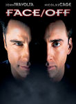
Face/Off (1997)
Stephen Klancher: September 15, 2008
Cage is supercool! He's part retarded and part awesome, but always fun to watch.
Seen 11 times, Last seen May 29, 2016

Million Dollar Baby (2004)
Stephen Klancher: July 4, 2009
Excellent movie! A lot like Gran Torino. Those three are fantastic actors. Some really hard to watch scenes, but just very good.
Seen 9 times, Last seen May 28, 2016
Hotel Rwanda (2004)
Seen 10 times, Last seen May 26, 2016

Strangers on a Train (1951)
Stephen Klancher: April 5, 2009
Solid main characters made this a lot of fun to see. I kept seeing Bruno as Bill Murray and Guy as Alan Cumming. Bruno was a great clever-psycho bad guy. And that ending had to be the most dangerous merry-go-round in the world.
Seen 12 times, Last seen May 25, 2016

V for Vendetta (2005) Releases on 2006-03-17
Stephen Klancher: March 17, 2006
I loved this movie. In terms of pure enjoyment coming out of the theater this ranks near the top for me. All kinds of cool.
Seen 14 times, Last seen May 24, 2016

Mr. Smith Goes to Washington (1939)
Seen 12 times, Last seen May 23, 2016

Monty Python and the Holy Grail (1975)
Stephen Klancher: SEEN
I had heard every joke long before I actually saw this, so while it was funny, it was underwhelming and not very memorable.
Seen 12 times, Last seen May 22, 2016

Star Wars: Episode VI - Return of the Jedi (1983)
Seen 13 times, Last seen May 20, 2016

Cinema Paradiso (1988) Releases on 1969-12-31
Stephen Klancher: SEEN
I watched this with my mom in Bakersfield at some point. I remember hearing the title and not thinking I was interested, until either I looked it up or she told me it was on the IMDb list... now it was part of the mission! The movie itself was okay...
Seen 8 times, Last seen May 19, 2016

The Prestige (2006)
Stephen Klancher: SEEN
I liked this a lot. Although I seem to remember that something about it lead to an argument. Whatever, very fun.
Seen 9 times, Last seen May 17, 2016

Gladiator (2000)
Stephen Klancher: SEEN
Fun movie... I always picture the "walking through the fields" sequence... Also, Battle!
Seen 13 times, Last seen May 15, 2016

Alien (1979)
Stephen Klancher: January 15, 2008
I thought I had seen it before. Finally saw for sure now that I'm going through all the Alien and Predator movies with Nick.
Very cool movie.
Very cool movie.
Seen 10 times, Last seen May 13, 2016

It's a Wonderful Life (1946)
Stephen Klancher: SEEN
This was our Christmas movie growing up with my dad and it has ingrained a like of Jimmy Stewart in my brain.
Seen 8 times, Last seen May 11, 2016
Barry Lyndon (1975)
Seen 7 times, Last seen May 10, 2016

Howl's Moving Castle (2004) Releases on 1969-12-31
Seen 15 times, Last seen May 9, 2016
Gandhi (1982) Releases on 1969-12-31
Stephen Klancher: January 20, 2010
I learn more from Hollywood than I ever did from school. Seems like some of this stuff would have been cool to learn more about in a history class.
Seen 13 times, Last seen May 8, 2016

Mary and Max (2008) Releases on 2009-04-09
Stephen Klancher: December 11, 2010
Weirdly funny and endearing. I was surprised how much I enjoyed it.
Seen 12 times, Last seen May 6, 2016

Into the Wild (2007)
Stephen Klancher: April 22, 2009
Good movie. Better than I thought it would be from the description and suited my mood today.
Seen 12 times, Last seen May 5, 2016

My Neighbor Totoro (1988)
Stephen Klancher: April 21, 2010
Cat-bus is awesome. Most of what I like in this movie is better done in Spirited Away. But still this was a relaxing movie with good animation and occasionally good music too.
Seen 14 times, Last seen May 4, 2016

Annie Hall (1977) Releases on 1977-04-20
Stephen Klancher: SEEN
I watched this while doing other things and I'm never sure if that means I'm not giving something a fair chance, but I didn't care for this movie.
Seen 12 times, Last seen May 3, 2016

Kill Bill: Vol. 1 (2003) Releases on 2003-10-10
Stephen Klancher: October 18, 2003
It was super exciting to go see this in the theater. I had watched other Tarantino movies over the previous year or two and introduced them to Brett sometime after we met. And seeing a movie like that in a theater down the street from a university makes for a fun crowd.
Seen 16 times, Last seen April 30, 2016
It Happened One Night (1934)
Stephen Klancher: July 7, 2009
I was amused at the Walls of Jericho motif and the fact that they asked for a trumpet at the end. This time, dear, he gave a damn.
Seen 11 times, Last seen April 1, 2016

The Good, the Bad and the Ugly (1966)
Stephen Klancher: SEEN
I knew I had enjoyed Unforgiven and Shane, but this was the movie which convinced me: I really enjoy westerns! I watched this with a girl I met on a bus. She forgot her purse and I argued with the bus driver and made him wait until she came running up from the previous bus stop. Obviously the only thing to do was invite her over for dinner and a western right?
Seen 6 times, Last seen March 15, 2016
This Boy's Life (1993) Releases on 1993-04-09
Seen 13 times, Last seen March 15, 2016
The Basketball Diaries (1995) Releases on 1995-04-21

Seen 7 times, Last seen March 6, 2016

The Apartment (1960)
Stephen Klancher: December 13, 2008
Early in the movie I felt annoyed that Lemmon felt too much like his comedy character in Some Like It Hot, but overall both he and MacLaine were great in this movie.

Seen 12 times, Last seen March 1, 2016

The Maltese Falcon (1941)
Stephen Klancher: SEEN
One of the early "old" movies that I watched. Enjoying it firmed up the notion that I would actually go through the IMDb list.
Seen 11 times, Last seen February 10, 2016
Network (1976) Releases on 1969-12-31
Stephen Klancher: April 25, 2010
A lot of cool moments throughout this. I enjoyed watching Faye Dunaway in Bonnie and Clyde just recently and she and William Holden were great in this.
Seen 9 times, Last seen February 4, 2016

Jaws (1975) Releases on 1975-06-20
Stephen Klancher: February 16, 2009
Body in the boat scared the fuck out of me. That was an intense movie.
Seen 0 times, Last seen January 20, 2016
Truly Madly Deeply (1990) Releases on 1991-05-24

Seen 21 times, Last seen January 6, 2016
I'll Be Home for Christmas (1998) Releases on 1998-11-13
Seen 6 times, Last seen December 22, 2015
Stir of Echoes (1999) Releases on 1999-09-10


Seen 6 times, Last seen November 3, 2015
Now and Then (1995) Releases on 1995-10-20
Seen 20 times, Last seen September 15, 2015
Awakenings (1990) Releases on 1990-12-12
Seen 6 times, Last seen September 15, 2015
The People Under the Stairs (1991) Releases on 1991-11-01
Seen 6 times, Last seen September 15, 2015
New Nightmare (1994) Releases on 1994-10-14

Seen 5 times, Last seen August 18, 2015
My Best Friend's Wedding (1997) Releases on 1997-06-20
Seen 13 times, Last seen July 28, 2015
Drive Me Crazy (1999) Releases on 1999-10-01
Seen 6 times, Last seen June 23, 2015
Austin Powers: The Spy Who Shagged Me (1999)
Seen 0 times, Last seen June 7, 2015

Boyhood (2014) Releases on 2014-08-15
Seen 117 times, Last seen May 12, 2015

Gattaca (1997)
Stephen Klancher: SEEN
I saw this with Bob and Garrett in the theater. It's a cool scenario and I like the kind of odd yellow filter used for most scenes.
Seen 10 times, Last seen March 31, 2015
Romy and Michele's High School Reunion (1997) Releases on 1997-04-25
Seen 12 times, Last seen March 17, 2015
A River Runs Through It (1992) Releases on 1992-09-13
Seen 59 times, Last seen February 10, 2015
Fear and Loathing in Las Vegas (1998)
Seen 25 times, Last seen November 10, 2014
Bride of Chucky (1998) Releases on 1998-10-15
Seen 59 times, Last seen October 27, 2014
The Game (1997)
Stephen Klancher: July 16, 2009
Fucking awesome movie. I had seen significant portions on tv long ago and this is an unfortunate movie in which to have spoiled surprises. But it was still great to see the whole thing finally.

Seen 6 times, Last seen September 19, 2014

Slumdog Millionaire (2008)
Stephen Klancher: February 15, 2009
Fantastic music and a very well put together movie. I can see why it was so well liked.

Seen 20 times, Last seen September 7, 2014
The Fisher King (1991)
Stephen Klancher: March 5, 2010
Terry Gilliam + Jeff Bridges + Robin Williams is an amazing combination. Very fun movie. Only saw one midget though, Gilliam must have been disappointed.
Seen 6 times, Last seen September 7, 2014
Chaplin (1992)
Stephen Klancher: October 14, 2009
I figured if I was going to see so many Chaplin movies, I might as well see him from another perspective too. Robert Downey Jr. did a great job here.
Seen 20 times, Last seen September 7, 2014
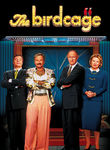
The Birdcage (1996) Releases on 1996-03-08
Seen 6 times, Last seen September 7, 2014

The Horse Whisperer (1998) Releases on 1998-05-15
Seen 13 times, Last seen August 31, 2014
Bicentennial Man (1999) Releases on 1999-12-13

Seen 6 times, Last seen August 24, 2014

Teenage Mutant Ninja Turtles III (1993)
Seen 6 times, Last seen August 24, 2014
Jakob the Liar (1999) Releases on 1999-09-16

Seen 2 times, Last seen July 11, 2014

Black Swan (2010) Releases on 2010-12-17
Stephen Klancher: December 20, 2010
That was crazy amazing. All I knew going in was there was ballet and it was supposed to be good. Totally surprising and totally insane... the qualities I like most in a movie.

Seen 14 times, Last seen April 14, 2014

Rushmore (1998)
Stephen Klancher: August 29, 2010
That movie spanned a quite a range... weird, funny, sad, happy... good stuff.
Seen 385 times, Last seen February 24, 2014

Magnolia (1999)
Stephen Klancher: May 20, 2010
Frogs, what the fuck? Long but fun to watch... so many good people in it. Tom Cruise and William H Macy were fun to watch and I always like seeing Philip Seymour Hoffman.
Seen 6 times, Last seen January 27, 2014

The Ninth Gate (1999)
Stephen Klancher: August 5, 2009
Well created dark atmosphere and character in this. Doesn't hurt that I like Johnny Depp. I watched about half of this three years ago and now finally watched it in full. I was disappointed by what felt like to me like an abrupt ending, but it was still cool. I thought I remembered more being revealed about the girl before the end of the movie.
Seen 6 times, Last seen December 23, 2013
All I Want for Christmas (1991) Releases on 1991-11-08
Seen 20 times, Last seen December 16, 2013
JFK (1991)
Seen 30 times, Last seen November 25, 2013
Meet Joe Black (1998) Releases on 1998-11-13
Seen 6 times, Last seen November 4, 2013
Child's Play 2 (1990) Releases on 1990-11-09
Seen 6 times, Last seen November 4, 2013
Child's Play 3 (1991) Releases on 1991-08-30
Seen 0 times, Last seen October 18, 2013

WALLE (2008)
Stephen Klancher: July 27, 2008
I saw this with Tim and his wife at the tail end of its theater run. Cute movie and the first half or so is another good example of how much can be communicated with no verbal dialog.
Seen 5 times, Last seen July 15, 2013
The Hairdresser's Husband (1990) Releases on 0000-00-00

Seen 27 times, Last seen July 9, 2013

Die Hard: With a Vengeance (1995)
Stephen Klancher: April 25, 2009
So-so story, but Bruce Willis plus Samuel L. Jackson is a fun combination and Jeremy Irons is a good villain. The ending felt like it was separate from the rest of the movie and quickly thrown in. Apparently there is a very different alternate ending so maybe that's why...
Seen 8 times, Last seen May 11, 2013
So I Married an Axe Murderer (1993) Releases on 1993-07-30
Seen 8 times, Last seen May 11, 2013

Guest House Paradiso (1999) Releases on 0000-00-00

Seen 1 times, Last seen January 15, 2013

The 70th Annual Golden Globe Awards (2013) Releases on 2013-01-13
Seen 6 times, Last seen January 14, 2013
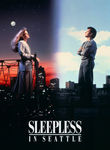
Sleepless in Seattle (1993) Releases on 1993-06-25
Seen 7 times, Last seen January 7, 2013
Only Yesterday (1991) Releases on 1991-07-20
Seen 6 times, Last seen December 31, 2012
Glengarry Glen Ross (1992) Releases on 1992-10-02
Seen 0 times, Last seen September 24, 2012

The 64th Primetime Emmy Awards (2012) Releases on 2012-09-23

Seen 585 times, Last seen September 17, 2012
Three Colors: Red (1994)

Seen 585 times, Last seen September 17, 2012
The Celebration (1998) Releases on 1998-06-19


Seen 1 times, Last seen February 28, 2012

The 84th Annual Academy Awards (2012) Releases on 2012-02-26

Seen 1 times, Last seen January 17, 2012

The 69th Annual Golden Globe Awards (2012) Releases on 2012-01-15
Seen 1 times, Last seen September 20, 2011

The 63rd Primetime Emmy Awards (2011) Releases on 2011-09-18
Seen 16 times, Last seen February 14, 2011
Neon Genesis Evangelion: The End of Evangelion (1997) Releases on 1997-07-19
2011-02-26 - Watched Star Wars Begins, the excellent fan-made documentary.